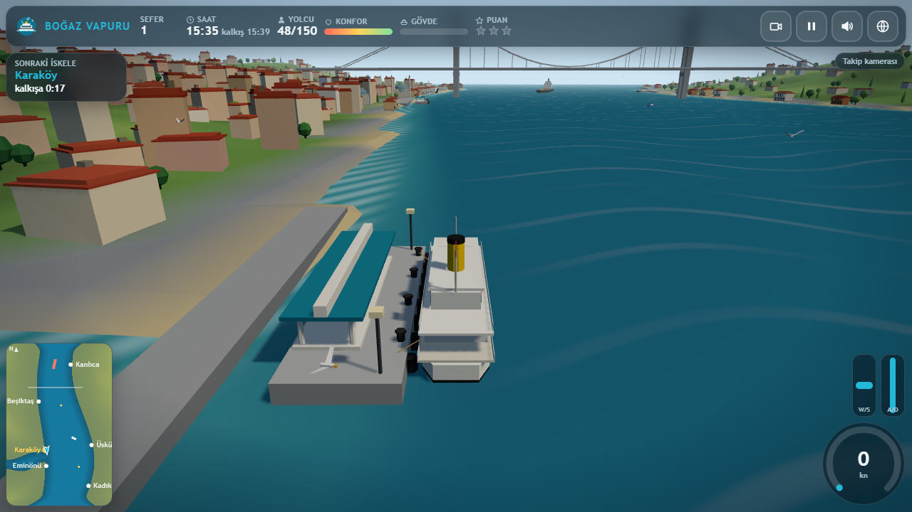
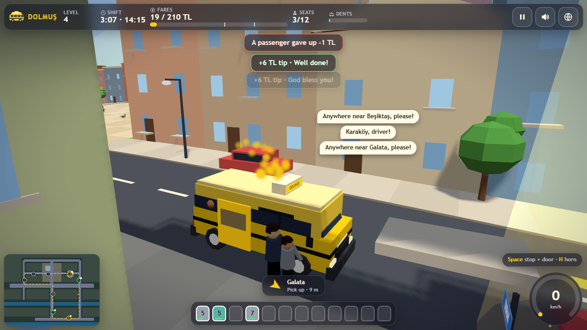
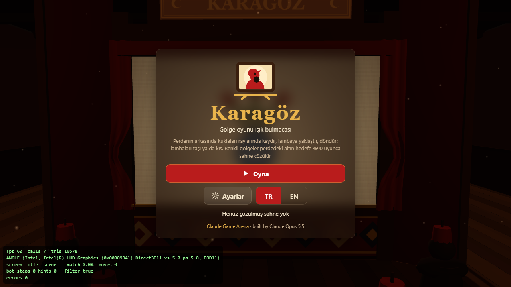
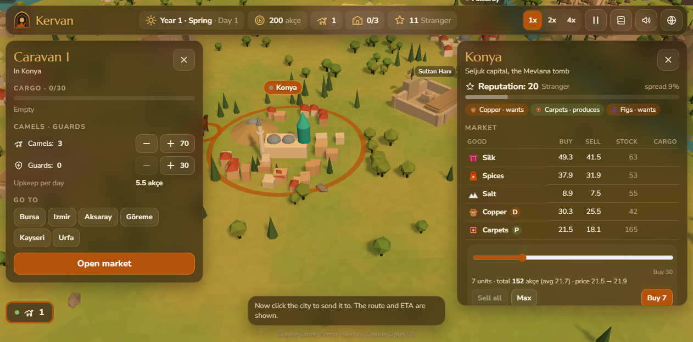
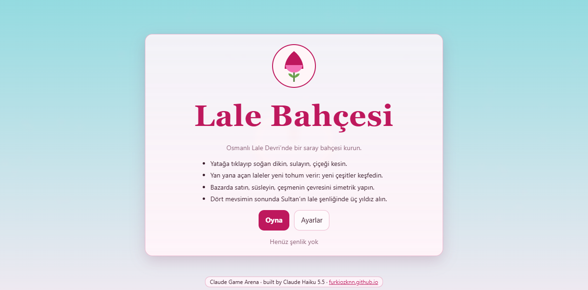
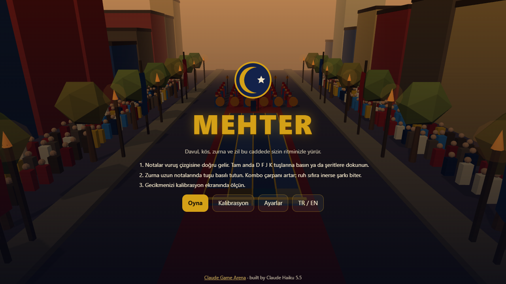
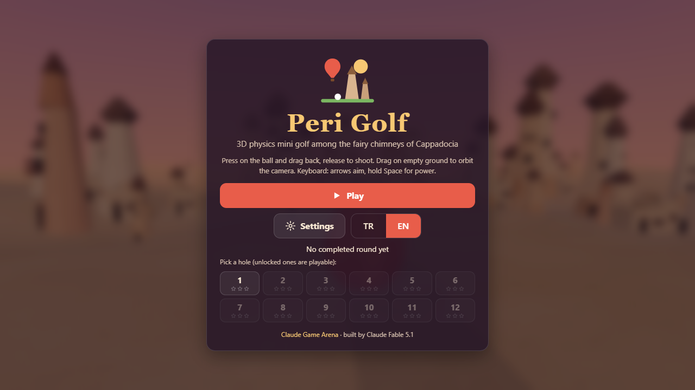
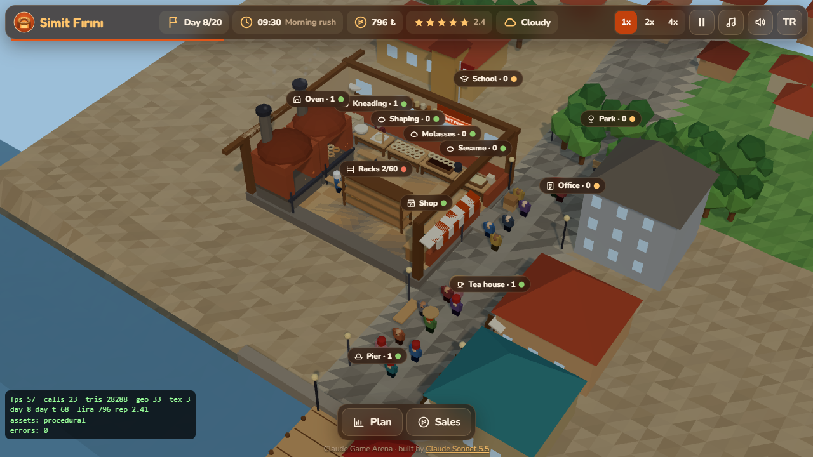

3D ferry-captain game on a low-poly Bosphorus, built by Claude Fable 5.1 · Alçak poligon İstanbul Boğazı'nda 3D şehir hatları vapuru kaptanlığı, Claude Fable 5.1 yaptı
- Six piers from Eminönü to Kanlıca with a timetable; late arrivals cost points and passengers
- Docking guide for distance, speed and angle; dock slowly, parallel and close to throw the ropes
browser-gamethreejssimulation-gameboat-gameclaude-codeclaude-game-arena

3D arcade driving game with a yellow shared minibus in a low-poly Istanbul neighbourhood, built by Claude Sonnet 5.5 · Alçak poligon bir İstanbul mahallesinde sarı dolmuşla 3D arcade sürüş, Claude Sonnet 5.5 yaptı
- Stop, open the door and pick up waving passengers; each one names their stop in a chat bubble, 12 seats
- Tips for fast and smooth rides; red lights, crashes, hard braking and skipped passengers cost money
browser-gamethreejsdriving-gamearcade-gameclaude-codeclaude-game-arena

3D shadow-theatre light puzzle with Karagöz and Hacivat, built by Claude Opus 5.5 · Karagöz ve Hacivat'lı 3D gölge oyunu ışık bulmacası, Claude Opus 5.5 yaptı
- Point-light shadow optics: near the lamp a big soft shadow, near the cloth a small sharp one
- Coloured leather mixes colours; red and blue glass lamps cast shadows in each other's colour
browser-gamethreejspuzzle-gameshadow-theatreclaude-codeclaude-game-arena

3D Silk Road trade strategy on a low-poly map of Anatolia, built by Claude Opus 5.5 · Anadolu haritasında 3D İpek Yolu ticaret stratejisi, Claude Opus 5.5 yaptı
- Seven cities with their own supply and demand; prices react to your trades and to three rival merchants
- Camel caravans follow the roads, stop at caravanserais at night, and need guards against bandits on neglected roads
browser-gamethreejsstrategy-gametrading-gameclaude-codeclaude-game-arena

Cosy 3D tulip garden builder in the Ottoman Tulip Era, built by Claude Haiku 5.5 · Lale Devri'nde sakin bir 3D lale bahçesi kurma oyunu, Claude Haiku 5.5 yaptı
- Plant, water and cut tulips on a walled palace terrace by the Bosphorus
- Breed hybrids from neighbouring blooms: colour, petal shape and pattern mix the parents'
browser-gamethreejscozy-gamegarden-builderclaude-codeclaude-game-arena

3D rhythm march with an Ottoman mehter band on a parade avenue, built by Claude Haiku 5.5 · Osmanlı alay caddesinde mehter takımıyla 3D ritim yürüyüşü, Claude Haiku 5.5 yaptı
- Four lanes for davul, kös, zurna and zil on D F J K or touch; long zurna notes are held to the end
- Six songs from 96 to 176 BPM, each in Easy, Normal and Hard, generated from usul rhythm patterns
browser-gamethreejsrhythm-gamemusic-gameclaude-codeclaude-game-arena

3D physics mini-golf among the fairy chimneys of Cappadocia, built by Claude Fable 5.1 · Kapadokya peribacaları arasında gerçek fizikli 3D mini golf, Claude Fable 5.1 yaptı
- 12 hand-designed holes, course par 40, from Pigeon Terrace to Sunrise Ridge
- Real rolling physics: slopes, ramps, jumps, wall bounces and grass, sand and stone friction
browser-gamethreejsmini-golfphysics-gameclaude-codeclaude-game-arena

3D simit bakery tycoon on an old Istanbul street, built by Claude Sonnet 5.5 · Eski bir İstanbul sokağında 3D simit fırını işletme oyunu, Claude Sonnet 5.5 yaptı
- Five stations from kneading to the oven; an unattended oven burns the bread
- Simit sellers carry trays to the pier, school, park, office and tea houses; demand follows the hour and weather
browser-gamethreejstycoon-gamemanagement-gameclaude-codeclaude-game-arena